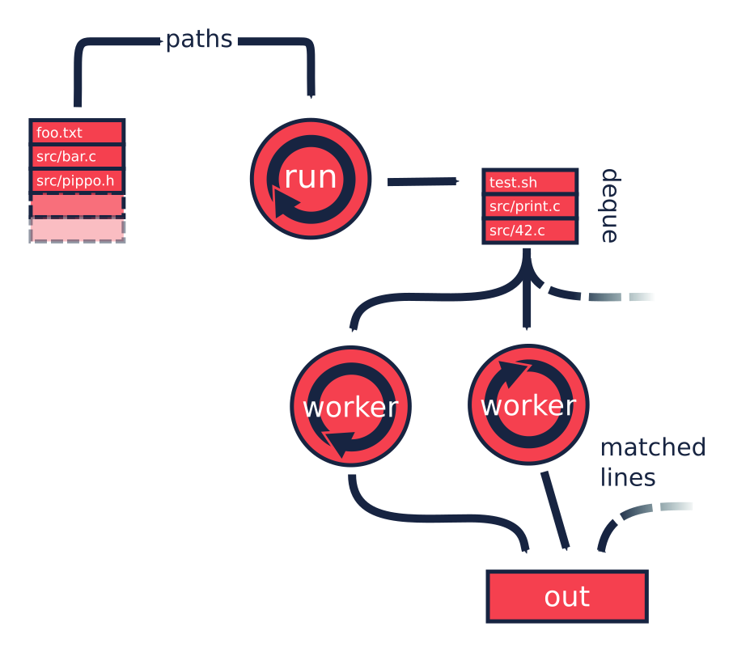
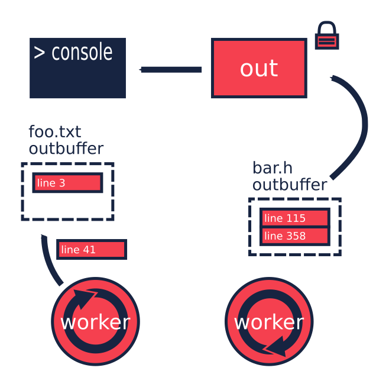

ripgrep code review
I've been playing around with Rust for a year and a half, and the best part of it, like many others say, has been the very helpful community. There are a lot of online resources that help you to get started: the Rust book, the Rustonomicon and many blog posts and stack overflow questions. After I learned the basics I felt a bit lost though. I couldn't find enough resources for intermediate-level-Rustaceans. I'm a C++ developer in my daily job, and so I'm used with books like Effective C++ from Scott Meyers, the Herb Sutter's blog and a lot of online resources that always helped me with advanced C++ topics (that are a lot… :sigh:). Those resources teach you how to get the best from the language, how to use it properly, and how to structure your code to be more clear and effective. Those resources are not completely absent in the Rust community, but neither common.
How do you learn those things then? Well, there are two ways in my opinion: you spend a lot of time and learn by doing, or you look at some good code. I think code reviews are incredibly useful; you can see how other people reason about problems you also struggled with, and how they have solved them. This post attempts to target those intermediate-level-Rustaceans (like me), by looking at the ripgrep crate by Andrew Gallant, a great example of good Rust.
1 Introduction
I'm not going to explain everything about the crate, since there is already a very good blog post by Andrew himself, explaining how the application works from a functional perspective, and some used algorithms. We are going instead to walk through the crate architecture. I'm going to take for granted some of the basics, so if you need a refresher you can take a look at the resources I mentioned above.
We are going to look at this specific version of the crate:
$ git describe 0.2.5-4-gf728708
which is the last one at the time of writing. By the time you are reading this, however, the crate might have evolved, so if you want to look at the code by yourself while reading, you should checkout this specific version:
$ git clone https://github.com/BurntSushi/ripgrep.git $ cd ripgrep $ git checkout f728708
and without further ado, let's get started.
2 The big picture
ripgrep is a command line tool for searching file contents using regular
expressions, similarly to GNU grep. The tool is split across four crates: the
main one (ripgrep), ignore, grep and globset.

The grep crate provides line-by-line regex searching from a buffer and it is
used only by the main crate. The globset crate uses regex to perform glob
matching over paths. It is used by the main and the ignore crates. The
ignore crate implements directory walking, ignore and include patterns. It
uses the glob crate for that. Finally, the main crate, that glues everything
together, implements command line argument parsing, output handling and
multi-threading.
One clear advantage of splitting an application in multiple crates is that this
forces you to keep your code scoped. It's easy to create a mess of dependencies
among the components if everything is in the same crate (or, even worse, in the
same module). If you instead take a part of your application and try to give it
a meaning by itself, you'll end up with a more generic, usable and clearer
interface. Embrace the Single responsibility principle and let it be your guide,
like ripgrep clearly does.
3 Main
Everything starts from the ripgrep main function:
fn main() { match Args::parse().and_then(run) { Ok(count) if count == 0 => process::exit(1), Ok(_) => process::exit(0), Err(err) => { eprintln!("{}", err); process::exit(1); } } }
It is very concise: it parses the command line arguments and then passes them to
the run function. In between, there is the Result::and_then combinator, so the
match statement gets to the Ok branch only if both operations succeed. If
not, it selects the Err branch, handling errors for both the first and the
second operation. Then the exit code depends on whether the count for matches is
not zero.
fn run(args: Args) -> Result<u64> { // ... }
The run function at first decides if it's worth to spawn threads or not, and
if so, this is the way it setups the things:

The main thread, controlled by the run function digs files from the
file system, and pushes them into a deque. This is a Single-producer /
Multiple-consumers queue, from which multiple worker threads can pull at the
same time. They will in turn perform the search operations. Here is the workers
initialization in the run function:
let workq = { let (workq, stealer) = deque::new(); for _ in 0..threads { let worker = MultiWorker { chan_work: stealer.clone(), // initialize other fields... }; workers.push(thread::spawn(move || worker.run())); } workq };
As you can see, the deque::new() returns two objects. The queue is indeed
composed by two ends: one is the workq from which the main thread can push,
and the other end is the stealer, from which all the workers can pull. The
loop creates a bunch of workers and move them to new threads, along with a
stealer. Note that the stealer is cloneable, but this doesn't mean that the
queue itself is cloned. Internally indeed the stealer contains an Arc to the
queue:
pub struct Stealer<T: Send> { deque: Arc<Deque<T>>, }
To note here is the beauty of the deque interface. To express the fact that
the producer is only one, but the consumers can be multiple, the type is split
in two: the producer is then Send but not Sync, nor Clone. There is no way to
use it from multiple threads, since you can move it to another thread, but in
that case you lose your reference to it. The Stealer, which is the other end,
is instead both Send and Clone. You can then pass it around by cloning and
sending the copies off to other threads; they all refer to the same queue. There
is no way to use this interface incorrectly.
Another thing to note here is that the workq variable is initialized by a
block that returns just the producer part of a new deque. Inside the block,
the workers along with their stealers are moved into new worker threads and
those are in turn pushed into a vector. Using a block that just returns what
it's needed for the rest of the function is a good practice. In this way the
run function is not polluted with variables that are not usable anymore
because their values have been moved.
This is the MultiWorker struct, that runs in a separate thread:
struct MultiWorker { chan_work: Stealer<Work>, quiet_matched: QuietMatched, out: Arc<Mutex<Out>>, #[cfg(not(windows))] outbuf: Option<ColoredTerminal<term::TerminfoTerminal<Vec<u8>>>>, #[cfg(windows)] outbuf: Option<ColoredTerminal<WindowsBuffer>>, worker: Worker, }
the first field is the stealer. As you can see from its type, the stealer
receives Work structs:
enum Work { Stdin, File(DirEntry), Quit, }
The main thread will push them from its workq variable:
for dent in args.walker() { if quiet_matched.has_match() { break; } paths_searched += 1; if dent.is_stdin() { workq.push(Work::Stdin); } else { workq.push(Work::File(dent)); } }
The args.walker() is an iterator over the files to search, or the standard
input stream, if the - argument is passed. In the former case it pushes a
Work::File entry with the path, in the latter a Work::Stdin entry. The items
are received in the MultiWorker::run function. It is a loop that pops items
from the deque and process them one by one:
loop { if self.quiet_matched.has_match() { break; } let work = match self.chan_work.steal() { Stolen::Empty | Stolen::Abort => continue, Stolen::Data(Work::Quit) => break, Stolen::Data(Work::Stdin) => WorkReady::Stdin, Stolen::Data(Work::File(ent)) => { match File::open(ent.path()) { Ok(file) => WorkReady::DirFile(ent, file), Err(err) => { eprintln!("{}: {}", ent.path().display(), err); continue; } } } }; // ... }
The steal() method tries to pop from the deque and returns a Stolen
instance:
pub enum Stolen<T> { /// The deque was empty at the time of stealing Empty, /// The stealer lost the race for stealing data, and a retry may return more /// data. Abort, /// The stealer has successfully stolen some data. Data(T), }
The outcome is matched against the different possibilities, but only
Stolen::Data contains a Work entry. Both Stdin and File entry types are
then translated into a WorkReady instance. In the second case the file is then
opened with an std::fs::File. The work variable is later consumed by a
Worker instance:
self.worker.do_work(&mut printer, work);
We'll get back to that in a moment, but let's first backtrack to the
MultiWorker::run loop. The Work::Quit case breaks it, so the thread
terminates:
let work = match self.chan_work.steal() { // ... Stolen::Data(Work::Quit) => break, // ... };
This value is pushed by the main thread after it walks through all the files.
for _ in 0..workers.len() { workq.push(Work::Quit); } let mut match_count = 0; for worker in workers { match_count += worker.join().unwrap(); }
The threads are all guaranteed to terminate because the number of Quit
messages pushed is the same as the number of workers. A worker can only consume
one of them and then quit. This implies, since no messages can be lost, that all
the workers will get the message at some point, and then terminate. All the
workers threads are then joined, waiting for completion.
To recap, this is a the multi-threading pattern used:
- a
dequein between a producer (that provides the work items) and a bunch of consumers (that do the heavy lifting) in separate threads; - the
dequecarries an enumeration of the things to do, and one of them is theQuitaction; - the producer will eventually push a bunch of
Quitmessages to terminate the worker threads (one per thread).
In case you just have one type of job, it makes perfect sense to use an
Option<Stuff> as work item, instead of an enumeration. The workers have then
to terminate in case None is passed. The Option can be used also in the
ripgrep case instead of the Quit message, but I'm not sure the code would be
more readable:
let work = match self.chan_work.steal() { Stolen::Empty | Stolen::Abort => continue, Stolen::Data(None) => break, Stolen::Data(Some(Work::Stdin)) => WorkReady::Stdin, Stolen::Data(Some(Work::File(ent)) => { // ... } };
3.1 Mono thread
ripgrep can also operate in a single thread, in case there is only one file to
search or only one core to use, or the user says so. The run function checks
that:
let threads = cmp::max(1, args.threads() - 1); let isone = paths.len() == 1 && (paths[0] == Path::new("-") || paths[0].is_file()); // ... if threads == 1 || isone { return run_one_thread(args.clone()); }
and calls the run_one_thread function (I have removed some uninteresting
details from it):
fn run_one_thread(args: Arc<Args>) -> Result<u64> { let mut worker = Worker { args: args.clone(), inpbuf: args.input_buffer(), grep: args.grep(), match_count: 0, }; // ... for dent in args.walker() { // ... if dent.is_stdin() { worker.do_work(&mut printer, WorkReady::Stdin); } else { let file = match File::open(dent.path()) { Ok(file) => file, Err(err) => { eprintln!("{}: {}", dent.path().display(), err); continue; } }; worker.do_work(&mut printer, WorkReady::DirFile(dent, file)); } } // ... }
As you can see, the function uses a single Worker and if you remember, this
struct is used by MultiWorker too. The files to search are iterated by
args.walker() as before and each entry is passed to the worker, as before.
The use of Worker in both cases allows code reuse to a great extent.
4 The file listing
We are now going to look over the file listing functional block.
The default operation mode of ripgrep is to search recursively for non-binary,
non-ignored files starting from the current directory (or from the user
specified paths). To enumerate the files and feed the search engine, ripgrep
uses the ignore crate.
But let's start from the beginning: the walker function. It returns a Walk
instance, it is constructed by Args and used by the run function in
main:
pub fn walker(&self) -> Walk;
Walk is just a simple wrapper around the ignore::Walk struct. A value of
this struct can be created by using its new method:
pub fn new<P: AsRef<Path>>(path: P) -> Walk;
or with a WalkBuilder, that implements the builder pattern. This allows to
customize the behavior without annoying the users of the library, since it frees
them from the burden to provide a lot of parameters to the constructor, when
just the default values are needed:
let w = WalkBuilder::new(path).ignore(true).max_depth(Some(5)).build();
In this example we have created a WalkBuilder with default arguments and just
override the ignore and max_depth options.
The implementation of the type is not very interesting from our point of view.
It is basically an Iterator that walks through the file system by using the
walkdir crate, but ignores the files and directories listed in .gitignore
and .ignore files possibly present, with the help of the Ignore type. We'll
look at that type a bit later. Let's look at the Error type first:
/// Represents an error that can occur when parsing a gitignore file. #[derive(Debug)] pub enum Error { Partial(Vec<Error>), WithLineNumber { line: u64, err: Box<Error> }, WithPath { path: PathBuf, err: Box<Error> }, Io(io::Error), Glob(String), UnrecognizedFileType(String), InvalidDefinition, }
This error type has an interesting recursive definition. The Partial case of
the enumeration contains a vector of Error instances, for example.
WithLineNumber adds line information to an Error1. Then the
error::Error, fmt::Display and From<io::Error> traits are implemented, to make
it a proper error type and to easily construct it out an io::Error. Here, the
necessary boilerplate to crank up the error type are handcrafted. Another
possibility could have been to use the quick-error macro, which reduces the
burden to implement error types to a minimum.2
4.1 Ignore patterns
Ignore patterns are handled within the ignore crate by the Ignore struct.
This type connects directory traversal with ignore semantics. In practice it
builds a tree-like data structure that mimics the directories tree, in which
nodes are ignore contexts. The implementation is quite complicated, but let's
give it a brief look:3
#[derive(Clone, Debug)] pub struct Ignore(Arc<IgnoreInner>); #[derive(Clone, Debug)] struct IgnoreInner { compiled: Arc<RwLock<HashMap<OsString, Ignore>>>, dir: PathBuf, overrides: Arc<Override>, types: Arc<Types>, parent: Option<Ignore>, is_absolute_parent: bool, absolute_base: Option<Arc<PathBuf>>, explicit_ignores: Arc<Vec<Gitignore>>, ignore_matcher: Gitignore, git_global_matcher: Arc<Gitignore>, git_ignore_matcher: Gitignore, git_exclude_matcher: Gitignore, has_git: bool, opts: IgnoreOptions, }
The Ignore
struct is a wrapper around an atomic reference counter to the actual data
(namely, the IgnoreInner). A first interesting field inside that struct is
parent, that is an Option<Ignore>. It points to a parent entry if present.
So, this is where the tree structure comes from: the Arc can be shared, so
multiple Ignore can share the same parent. But that's not all; they can also
be cached in the compiled field, that has a quite complex type:
Arc<RwLock<HashMap<OsString, Ignore>>>
This is the cache of Ignore instances that is shared among all of them.
Let's try to break it down:
- the
HashMapmaps paths toIgnoreinstances (as expected); - the
RwLockallows the map to be shared and modified across different threads, without causing data races; - and finally the
Arcallow the cache to be owned safely by different owners in different threads.
Every time a new Ignore instance has to be built and added to a tree, the
implementation first looks in the cache, trying to reuse the existing instances.
The tree is built dynamically, while crawling the directories, looking for the
specific ignore files (e.g. .gitignore, .ignore, or .rgignore). The tree
gets also custom ignore patterns from the command line, and adds them to the
tree too.
Another interesting bit here is the add_parents signature for Ignore:
pub fn add_parents<P: AsRef<Path>>(&self, path: P) -> (Ignore, Option<Error>);
Instead of returning a Result<Ignore, Error>, it returns a pair, that contains
always a result and optionally an error. In this way partial failures are
allowed. If you remember, the error value can also be a vector of errors, so the
function can collect them while working, but then it can also return a (maybe
partial) result in the end. I found this approach very interesting.
5 The search process
In this section we will look at how the regex search inside a file is
implemented. This process involves some modules in ripgrep and also the grep
crate.
Everything starts from Worker::do_work in main.rs. Based on the type of the
file passed in, it calls search or search_mmap. The first function is used
to read the input one chunk at a time and then search, while the second is used
to search into a memory mapped input. In this case there is no need to read the
file into a buffer, because it is already available in memory, or more
precisely, the kernel will take care of this illusion.
The search function just creates a new Searcher and calls run on it.
impl<'a, R: io::Read, W: Terminal + Send> Searcher<'a, R, W> { pub fn run(mut self) -> Result<u64, Error>; }
The first interesting thing to note here is that the run function actually
consumes self, so you can't actually run the method twice. Why is that? Let's
have a look at the new method, that creates this struct:
impl<'a, R: io::Read, W: Terminal + Send> Searcher<'a, R, W> { pub fn new(inp: &'a mut InputBuffer, printer: &'a mut Printer<W>, grep: &'a Grep, path: &'a Path, haystack: R) -> Searcher<'a, R, W>; }
It takes a bunch of arguments and stores them into a new Searcher instance.
All the arguments to Searcher are passed as reference, except haystack which
is the Read stream representing the file. This means that when this struct
will be destroyed, the file will be gone too. Whenever you complete the search
for a file, you don't have to do it again, indeed. You can enforce this usage by
consuming the input file in the run function, or take its ownership in the
constructor and force the run function to consume self.
Since we cannot run the search twice using the same Searcher instance, why
don't we just use a function then? The approach used here has several
advantages:
- you get the behavior that the search cannot be run twice with the same file (but that's nothing that a free function could not do);
- you can split the function among different private functions, without passing
around all the arguments; they will all take
selfby reference (maybe also&mut self) and just use the member variables.
So, instead of:
fn helper1(inp: &mut InputBuffer, printer: &mut Printer<W>, grep: &Grep, path: &Path, haystack: &mut R) { // do something with path, grep, etc }
we have:
fn helper1(&mut self) { // do something with self.path, self.grep, etc }
The end result is much nicer.
The first variable that the Searcher takes is an InputBuffer. It is defined
in the same search_stream module, and it provides buffering for the input
file. It has the interesting feature to be able to keep part of the data across
reads. This is needed, for example, when the user requests context lines, or
when a single read is not enough to reach the next end of line.
The fill function in the InputBuffer, reads from the input and optionally
rolls over the contents of the buffer starting from the keep_from index:
fn fill<R: io::Read>(&mut self, rdr: &mut R, keep_from: usize) -> Result<bool, io::Error>;
The interesting implementation bit here is that the buffer grows whenever it needs more room, but it never shrinks. This avoids some re-allocations, at the expense of some memory. This approach is perfectly fine in this case, since the application is intended to work in one shot and then terminate. In a long running application such as a webserver, this is probably not what you want to do.
After the buffer has been filled, the Grep matcher runs, and in case of a
match, it prints the results according to the options (context lines, line
numbers, etc.).
Note that Searcher takes the input buffer by mutable reference. This means
that it can be reused for the next file, without allocating new memory for the
buffer with a new Searcher instance.
I'll be skipping most of the implementation review here, even if the code may be
interesting. Most of it however is not very relevant outside this specific case.
If you are interesting you can skim through the search_stream module code.
The other case is covered by the search_mmap function, that creates a
BufferSearcher, defined in the search_buffer module, and calls run on it,
like in the Searcher case:
impl<'a, W: Send + Terminal> BufferSearcher<'a, W> { pub fn run(mut self) -> u64; }
The same reasoning applies here: the struct is created and used only once for
one file, because the run function takes self by value. The purpose of the
search_buffer module is to search inside a file completely contained in a
single buffer, instead of a stream. This buffer is provided by a memory mapped
file, and it's used only when a stream would be slower.4 This module reuses
some types provided by the search_stream module:
use search_stream::{IterLines, Options, count_lines, is_binary};
Notably, it does not use the InputBuffer, since there is nothing to buffer
here: everything is already available in the given array. The implementation is
very basic, and it doesn't support some of the features the other module does
(like showing context lines).
No big surprises here. The only minor weak point for me is that this module
depends on the search_stream one. It doesn't actually build on top of it, but
it just imports some functionality. I'd rather try to move the common
implementation in another module from which they can both import. This makes
sense, since the common stuff is indeed not specific to either of the modules.
5.1 The grep crate
The grep crate provides all you need to regex search into a line. It builds on
top of the Rust regex crate and adds some optimizations in the literal module.
The result of a search is a Match instance, which is simply a position inside
that buffer:
#[derive(Clone, Debug, Default, Eq, PartialEq)] pub struct Match { start: usize, end: usize, }
The Grep type is cloneable. This is important, since it can be built once
(which is an expensive operation) and then cloned to all the worker threads:
#[derive(Clone, Debug)] pub struct Grep { re: Regex, required: Option<Regex>, opts: Options, }
I won't dig into the implementation details, since they are already very well covered in the already mentioned Andrew's blog post.
6 Output handling
The last bit we are going to investigate now is the output handling. The
challenge here is that ripgrep needs to write from multiple threads to a
single console avoiding to interleave the results.
Here is how the run function in our MultiWorker handles that:
let mut outbuf = self.outbuf.take().unwrap(); outbuf.clear(); let mut printer = self.worker.args.printer(outbuf); self.worker.do_work(&mut printer, work); // ... let outbuf = printer.into_inner(); if !outbuf.get_ref().is_empty() { let mut out = self.out.lock().unwrap(); out.write(&outbuf); } self.outbuf = Some(outbuf);
An output buffer is taken from self and passed to a printer. The printer is
then passed to the worker, that uses it to print the results. So far all the
output went to the buffer, and not to the actual console. Then, if anything has
been buffered, lock the output, that is shared across all the workers, and write
everything. The output buffer is reused in this interesting way: it is kept as
an Option field inside the MultiWorker itself. For every file, it is taken
from the option, passed by value to a Printer, and then when the Printer is
done, put it back in the Option. This allows to keep it mutable and pass it
around by value without creating it every time.
The trick used here, to avoid to interleave the prints, is to buffer all the
matches found in a file into a "virtual terminal" that doesn't print to the
console. After the search in that file is done, the output is written in one
shot, by locking a shared Out object and write the buffer contents to the
actual console.

Let's take a look at the various types involved. The MultiWorker keeps a
ColoredTerminal instance in its self.outbuf field. Its type depends on the
platform:
#[cfg(not(windows))] outbuf: Option<ColoredTerminal<term::TerminfoTerminal<Vec<u8>>>>, #[cfg(windows)] outbuf: Option<ColoredTerminal<WindowsBuffer>>,
The self.out is the same in all the platforms:
let out: Arc<Mutex<Out>>;
As you can see, it can be shared and mutated by multiple threads, because it is
wrapped in a Mutex and an Arc. Inside an Out instance, there is the
terminal used to write directly to the console:
#[cfg(not(windows))] let term: ColoredTerminal<term::TerminfoTerminal<io::BufWriter<io::Stdout>>>; #[cfg(windows)] let term: ColoredTerminal<WinConsole<io::Stdout>>;
A ColoredTerminal that refers to a TerminfoTerminal on Linux, and to a
WinConsole on Windows. They are both structs defined in the term crate.
But let's step back a and describe all these types a little bit better. The
Searcher uses a Printer whenever a match is found and the output is enabled.
The Printer is defined in the printer module and it encapsulates the general
output logic. It knows how to print a match, given some options, and forwards
the writes to an inner Terminal type.
pub struct Printer<W> { wtr: W, has_printed: bool, column: bool, context_separator: Vec<u8>, eol: u8, file_separator: Option<Vec<u8>>, heading: bool, line_per_match: bool, null: bool, replace: Option<Vec<u8>>, with_filename: bool, color_choice: ColorChoice }
Note that I took the comments out to make it shorter. As you can see, there is a
generic writer W (that is taken by value) and a lot of other options. This
generic parameter is expected to implement term::Terminal and Send, as you can
see in the implementation:
impl<W: Terminal + Send> Printer<W> { // printer implementation }
The struct uses the builder pattern again, but in a slightly different flavor.
The new method takes only a Terminal and sets all the options with a default
value. To change them, the user needs to call the various builder methods,
directly on the Printer itself, not on another builder helper. For example:
pub fn heading(mut self, yes: bool) -> Printer<W> { self.heading = yes; self }
takes self by mutable value and, after changing the heading option, returns
self by value again.
The implementation is simple. The public interface provides some methods to
print the various match components, like the path, the context separator and the
line contents. The only thing that is still not clear to me is why the Send
trait is also needed, since I don't see any threading in the struct
implementation, and all the print methods require a mutable self, e.g.:
pub fn context_separate(&mut self) { // N.B. We can't use `write` here because of borrowing restrictions. if self.context_separator.is_empty() { return; } self.has_printed = true; let _ = self.wtr.write_all(&self.context_separator); let _ = self.wtr.write_all(&[self.eol]); }
In any case, the implementation is more or less straight forward, and in the end
all the writes are directed to the inner Terminal.
In the Linux case, the Terminal is the default one provided by the term
crate itself: TerminfoTerminal. On Windows ripgrep provides a custom
implementation, since the coloring needs a special treatment, to avoid
performance hurt:
This particular implementation is a bit idiosyncratic, and the "in-memory" specification is to blame. In particular, on Windows, coloring requires communicating with the console synchronously as data is written to stdout. This is anathema to how ripgrep fundamentally works: by writing search results to intermediate thread local buffers in order to maximize parallelism. Eliminating parallelism on Windows isn't an option, because that would negate a tremendous performance benefit just for coloring. We've worked around this by providing an implementation of `term::Terminal` that records precisely where a color or a reset should be invoked, according to a byte offset in the in memory buffer. When the buffer is actually printed, we copy the bytes from the buffer to stdout incrementally while invoking the corresponding console APIs for coloring at the right location.
The implementation is provided by WindowsBuffer:
/// An in-memory buffer that provides Windows console coloring. #[derive(Clone, Debug)] pub struct WindowsBuffer { buf: Vec<u8>, pos: usize, colors: Vec<WindowsColor>, } /// A color associated with a particular location in a buffer. #[derive(Clone, Debug)] struct WindowsColor { pos: usize, opt: WindowsOption, } /// A color or reset directive that can be translated into an instruction to /// the Windows console. #[derive(Clone, Debug)] enum WindowsOption { Foreground(Color), Background(Color), Reset, }
This struct implements terminfo::Terminal as we said before, and it contains a
buffer of characters to print, a position on the buffer itself, and a vector of
colors and positions. Whenever the write is called, the output is buffered in
self.buf:
impl io::Write for WindowsBuffer { fn write(&mut self, buf: &[u8]) -> io::Result<usize> { let n = try!(self.buf.write(buf)); self.pos += n; Ok(n) } fn flush(&mut self) -> io::Result<()> { Ok(()) } }
and whenever a coloring option is passed, it is pushed into the colors vector,
along with the current position:
impl Terminal for WindowsBuffer { type Output = Vec<u8>; fn fg(&mut self, fg: Color) -> term::Result<()> { self.push(WindowsOption::Foreground(fg)); Ok(()) } // ... }
Then, when the higher level logic decides it's time to print everything, the
print_stdout is called, passing another terminal (the real one, linked with
the console):
/// Print the contents to the given terminal. pub fn print_stdout<T: Terminal + Send>(&self, tt: &mut T) { if !tt.supports_color() { let _ = tt.write_all(&self.buf); let _ = tt.flush(); return; } let mut last = 0; for col in &self.colors { let _ = tt.write_all(&self.buf[last..col.pos]); match col.opt { WindowsOption::Foreground(c) => { let _ = tt.fg(c); } WindowsOption::Background(c) => { let _ = tt.bg(c); } WindowsOption::Reset => { let _ = tt.reset(); } } last = col.pos; } let _ = tt.write_all(&self.buf[last..]); let _ = tt.flush(); }
Here, if the terminal does not support coloring, there is nothing special to do, and all the buffer contents are written. Otherwise, for every color option, it writes the buffer contents until the recorded position for that option, and than it applies the option. This is repeated until the end of the buffer.
The terminal is not used as is by the higher level logic, but wrapped inside a
ColoredTerminal instance:
#[derive(Clone, Debug)] pub enum ColoredTerminal<T: Terminal + Send> { Colored(T), NoColor(T::Output), }
The purpose of this type is simple: determine if the current terminal supports coloring, and if so use it. If not, just drop the terminal and use its internal writer type. Determine color support is a costly operation, so it's done only once, and the result is cached in a static variable, with the help of the lazy_static crate:
lazy_static! { // Only pay for parsing the terminfo once. static ref TERMINFO: Option<TermInfo> = { match TermInfo::from_env() { Ok(info) => Some(info), Err(err) => { debug!("error loading terminfo for coloring: {}", err); None } } }; }
The type then implements some specialized constructors for a bunch of types:
WindowsBuffer;WinConsole<io::Stdout>;- and the one for the generic writer
W: io::Write + Send.
If the terminal then supports coloring, it uses the Colored(T) enum value
(where T is T: Terminal + Send). In this case the ColoredTerminal instance
contains a Terminal. In the other case, the NoColor(T::Output) value is
selected and a plain io::Write is used. ColoredTerminal then implements
Terminal itself in this way:
impl<T: Terminal + Send> term::Terminal for ColoredTerminal<T> { type Output = T::Output; fn fg(&mut self, fg: term::color::Color) -> term::Result<()> { self.map_result(|w| w.fg(fg)) } // other very similar implementations... }
The intended behavior here is to forward the function to the inner terminal, if
present, or return an error. A possible solution would have been to match self
in this way:
match *self { ColoredTerminal::Colored(ref mut w) => w.fg(fg), ColoredTerminal::NoColor(_) => Err(term::Error::NotSupported), }
for all the functions. The solution adopted here is more elegant, as it
Implements a map_result that applies the given function to the inner
Terminal if it's present and returns an error otherwise:
impl<T: Terminal + Send> ColoredTerminal<T> { fn map_result<F>(&mut self, mut f: F) -> term::Result<()> where F: FnMut(&mut T) -> term::Result<()> { match *self { ColoredTerminal::Colored(ref mut w) => f(w), ColoredTerminal::NoColor(_) => Err(term::Error::NotSupported), } } }
In this way the whole Terminal implementation is just a bunch of one-liners.
The missing piece of this puzzle is the Out struct. The comment on top of the
struct speaks for itself:
/// Out controls the actual output of all search results for a particular file /// to the end user. /// /// (The difference between Out and Printer is that a Printer works with /// individual search results where as Out works with search results for each /// file as a whole. For example, it knows when to print a file separator.) pub struct Out { #[cfg(not(windows))] term: ColoredTerminal<term::TerminfoTerminal<io::BufWriter<io::Stdout>>>, #[cfg(windows)] term: ColoredTerminal<WinConsole<io::Stdout>>, printed: bool, file_separator: Option<Vec<u8>>, }
The implementation is straightforward: whenever write is called with a
ColoredTerminal as a buffer, it prints a separator (except for the first
file), then prints the buffer contents and then flushes the terminal. Here is
the Unix version:
#[cfg(not(windows))] pub fn write(&mut self, buf: &ColoredTerminal<term::TerminfoTerminal<Vec<u8>>>) { self.write_sep(); match *buf { ColoredTerminal::Colored(ref tt) => { let _ = self.term.write_all(tt.get_ref()); } ColoredTerminal::NoColor(ref buf) => { let _ = self.term.write_all(buf); } } self.write_done(); }
A very similar but not exactly equal version is provided for Windows, so there
is some code duplication. It would be better to abstract these details in
ColoredTerminal, providing a write_all method there, or in alternative, to
introduce a new trait used by ColoredTerminal itself that does the same and
than make TerminfoTerminal, WindowsBuffer and WindowsConsole to implement
it.
7 Concluding remarks
In this post we have done a ripgrep code review, with the main focus on the
design decisions and the interesting implementation solutions. The review is far
from being complete, but my goal was to look at the patterns and break them
down, in hope that they can be used in similar contexts by other projects.
In general the code is very clean, a part certain functions that would benefit
from some more comments. There is however an extensive usage of
#[inline(always)] and #[inline(never)] directives in the code, that I could
not explain. I wonder if they have been added after profiling and if so, why the
compiler have failed to identify them correctly. A possible use case is
intra-crate inlining, but compiling with rustc -C lto already allows to inline
everything (by slowing down compilation).5
In any case, I found the ripgrep crate a beautiful piece of software, from
which I could learn a lot. I hope I was able to convey this beauty with this
post.
7.1 Feedback
Andrew posted his feedback on Twitter and on HN. I report his comment here, because it's relevant for some of the remarks I made:
ripgrep author here! This is a great review, thanks for doing it! I'd like to respond to a few of the bad things pointed out. :P
The search code is indeed in a less than ideal state. I've mostly avoided refactoring it because I want to move it to its own separate crate. I've been steadily doing this for other things. Namely, ripgrep used to be a single main crate plus a small regex handling crate (grep), but now it's several: globset, grep, ignore, termcolor and wincolor. I'd like to roll the search code into the grep crate so that others can use it. Once that's done, ripgrep proper will be a pretty small, limited mostly to argv handling and output handling.
I do sometimes get overzealous with inline(always) and inline(never). Both are almost always a result of trying things while profiling, and then forgetting to remove them. If you look closely, most of them are in the core searching code where performance is quite important!
Finally, this code review was done while I was in the middle of moving more of ripgrep code out into the `ignore` and `termcolor` crates. The `ignore` crate does all the gitignore handling (which is quite tricky and is now being used by the tokei project) and provides a parallel recursive directory iterator, which made ripgrep even faster! The `termcolor` crate handles cross platform coloring shenanigans, including Windows consoles and mintty. It wasn't fun: issue #94… — The author did a great job reviewing the previous solution I used for colors though, and was something I really wasn't proud of!
I have corrected a typo, thanks @toqueteos.
There is some discussion going on in the r/rust subreddit, and on HN. Thank you guys for the feedback and the kind words, and thanks to Andrew for his great work.
That's all folks.
Footnotes:
In this case Box<Error>, since a recursive type cannot embed itself,
otherwise it would be impossible to compute the size of the type.
You can find a good reference on the error handling topic in the Rust book.
Please bear in mind that I have taken out the comments to make it shorter.
Generally this happens when searching into a single huge file.